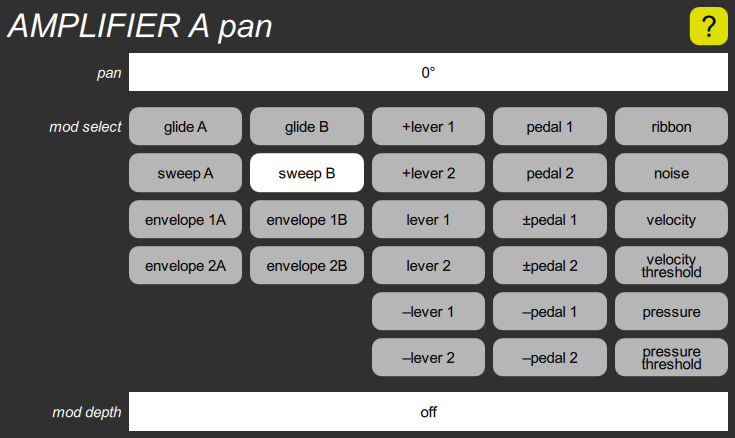

AMPLIFIER pan cluster

The AMPLIFIER section has one of these for each channel. It contains a pan parameter that adjusts the left/right output position, a mod select parameter to choose a modulation source, and a mod depth parameter to adjust the amount of modulation.
The pan parameter adjusts the balance between the left and right outputs. Its range is –90° (left) to +90° (right), with a default value of 0°.
The mod select parameter gives you the standard choices used by most modulation inputs. The default choice is sweep B, for stereo tremolo effects.
The mod depth parameter adjusts how much of the range corresponds to one unit of modulation input. It is off by default.